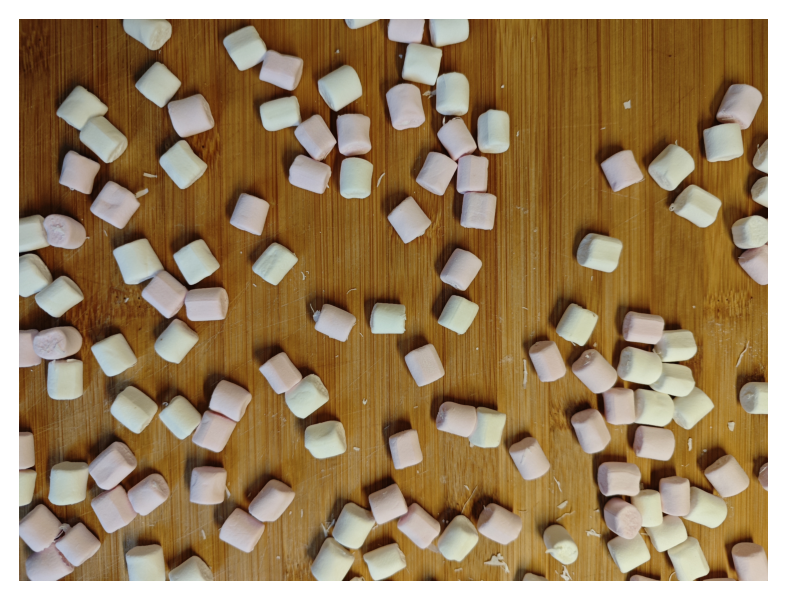
Biomedical Engineering Skills 3
Week 7: the whole pipeline, from one image to many
Massimo Vassalli
massimo.vassalli@glasgow.ac.uk
Where we are
DEFINE → DECOMPOSE → SPECIFY ⇄ DIAGNOSE → VALIDATE
| Week | Question |
|---|---|
| 5 | which pixels are objects? how many objects? |
| 6 | mask engineering: cleaning a mask; objects of different kinds inside it |
| 7 | the whole pipeline: separating touching objects; from one image to many |
By the end of today you should be able to:
- name the steps of an image-quantification pipeline, the idea behind each one, the strategies you can choose from, and how to show that the one you chose works
- separate touching objects, with a watershed or by looking again only at the objects that are too large
- turn a notebook into a pipeline: one function per step, the parameters in one place, one function that calls the steps in order, the same code run on many images
- look at the result on images you did not build on, say which step fails, and decide whether to change it or to accept the failure
Today
- the whole pipeline, one step at a time, on the marshmallows: the idea of the step, the strategies you could use, how to show it works, what we chose and the evidence that it worked
- two new steps: separating touching objects; running the pipeline on many photos
- tutorial: the final project
No notebook today: everything is on the slides. The code is in lec07_src/: marshmallow_pipeline.py (the pipeline) and check_marshmallows.py (the same pipeline on four more photos).
How many pink and how many white marshmallows are on the board?
Counted by hand: 57 pink, 56 white.
The pipeline
An image-quantification pipeline
| Step | The question it answers | Week | |
|---|---|---|---|
| 1 | open the image | what is really in the file? | 4 |
| 2 | pre-process | is there anything to correct before we start? | 4 |
| 3 | choose the representation | which number should each pixel carry? | 5 |
| 4 | background vs foreground | which pixels are objects? | 5 |
| 5 | clean the mask | which pixels did the threshold get wrong? | 6 |
| 6 | classes inside the foreground | which kind of object is each pixel? | 6 |
| 7 | measure and count | how big is one object? how many are there? | 5–6 |
| 8 | separate touching objects | where does one object end and the next begin? | 7 |
| 9 | generalise | does it work on the next photo? | 7 |
For each step, four things: the idea, the strategies you can choose from, how to show it works, and what we did on the marshmallows, with the evidence.
1. Open the image
The idea. Opening a file is not a step that changes anything, but it is where the first surprises hide. An image is a table of numbers: before using it, check what the numbers are.
Strategies. io.imread for ordinary photos; tifffile when the file carries metadata (pixel size, channels); imagecodecs for compressed TIFFs.
How to show it works. Print the shape, the type, the range; look at the picture and the histogram; read the metadata. Phone photos carry an orientation tag that imread ignores (you will meet it in the final project).
What we did.
shape: (3072, 4096, 3)
type: uint8
range: 0 to 241
pixels at 255 in all three channels: 0A colour photo, 8 bits per channel, 12 million pixels. Almost nothing saturated. The file had its EXIF (with the phone’s GPS position) removed before we shipped it.
2. Pre-process
The idea. Correct what the camera or the sample added and the question does not care about: uneven light, noise, saturation. Only if it is there, and only after checking. Strategies (week 4): divide by an estimate of the light (a smooth surface; a greyscale opening, the rolling ball); a median filter for salt-and-pepper noise; nothing at all. How to show it works: a digital image of the artefact with the expected result worked out by hand; the brightness of something that should be uniform, before and after.
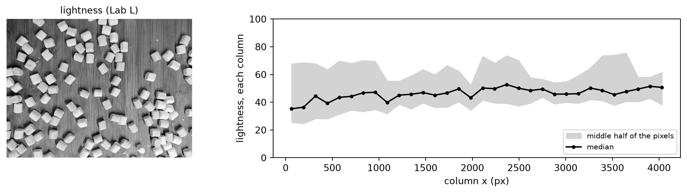
What we did: looked, and noted. Lightness, column by column across the whole photo: the light falls by about 22% from the right edge to the left one, smoothly. Is that a problem? It depends on the number we choose in step 3 to tell marshmallows from wood, so we write it down and do not correct anything yet. We check it again in step 4: if the uneven light disturbs the decision, this is the step we come back to.
3. Which number should each pixel carry?
The idea. Before choosing a threshold, choose what you threshold. Every pixel can carry many numbers: its red, green and blue; its hue, saturation and value; its lightness and the two colour axes of Lab. Grey is just one more choice, and often a poor one.
Strategies. One channel; another colour space (HSV, Lab); something you build yourself (a difference of channels, a ratio): be inventive.
How to show it works. First look: which numbers make the marshmallows stand out from the wood? Then measure, on points picked by hand on each kind of thing: the score and the plateau (two slides from now). Check the points themselves on the image first: a point on the wrong thing spoils everything.
What we did. 72 points on the wood and its shadows, 53 on marshmallows.
3. Points picked by hand: the point picker
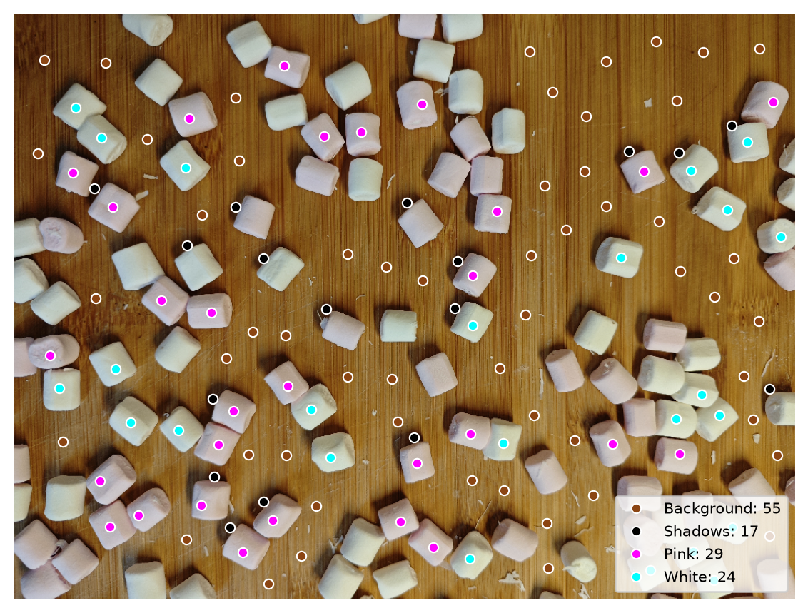
Every choice from here on is made with points picked by hand on the photo: which number each pixel carries, which threshold method, and, later, whether a step kept the right objects.
pointpicker.py (in lec06_src/, and in your final project folder): run python pointpicker.py, open a photo, add one category per kind of thing, click to add a point, right-click to remove the nearest one, save. The file has one line per point, category,pixelX,pixelY.
load_points("marsh.txt") reads it back as {category: array of (x, y)}.
Careful: points are stored as (x, y); arrays are read as image[row, col], that is image[y, x]. And check the points on the photo before trusting them: a point on the wrong thing spoils every number after it.
3. Nine numbers for each pixel
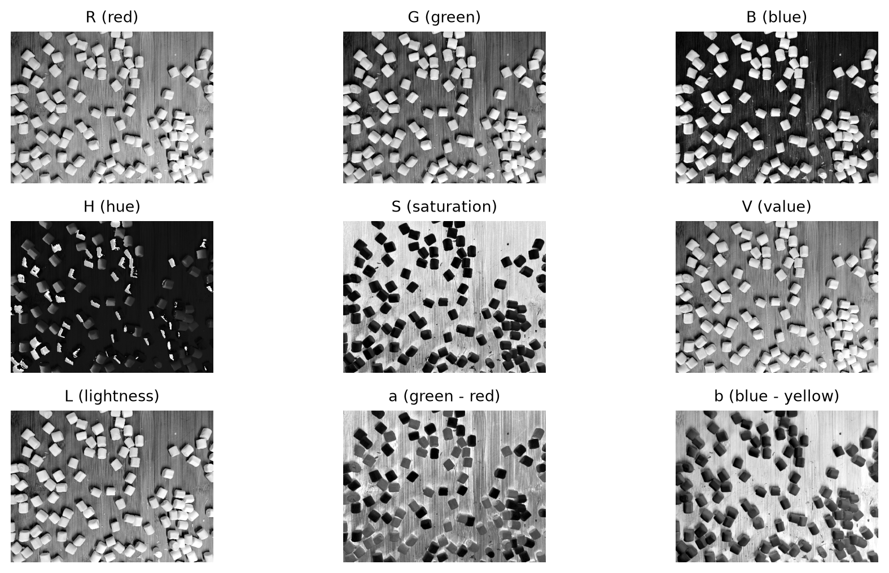
The same photo, nine times, each pixel shown by one number (grey scale stretched on each). Where do the marshmallows look different from the wood, everywhere in the photo? Where do they disappear into it? Where does the darker left side show up, and where not?
3. From looking to a number: score and plateau
Pick a representation and a threshold T. Every point picked by hand falls on one side: marshmallow or wood. With the four counts of week 3:
- sensitivity(T): the fraction of marshmallow points on the marshmallow side
- specificity(T): the fraction of wood points on the wood side
- score(T) = (sensitivity + specificity) / 2; the score of the representation is its best value over T
Accuracy (the fraction of all points on the right side) would do too. The two differ only when one group has many more points than the other, where accuracy can look good while one group is mostly wrong (week 3: “everything normal” scored 58%).
The plateau: the range of T where the score stays within 2 points of its best, as a fraction of the distance between the medians of the two groups. A wide plateau means the decision does not depend on the exact T.
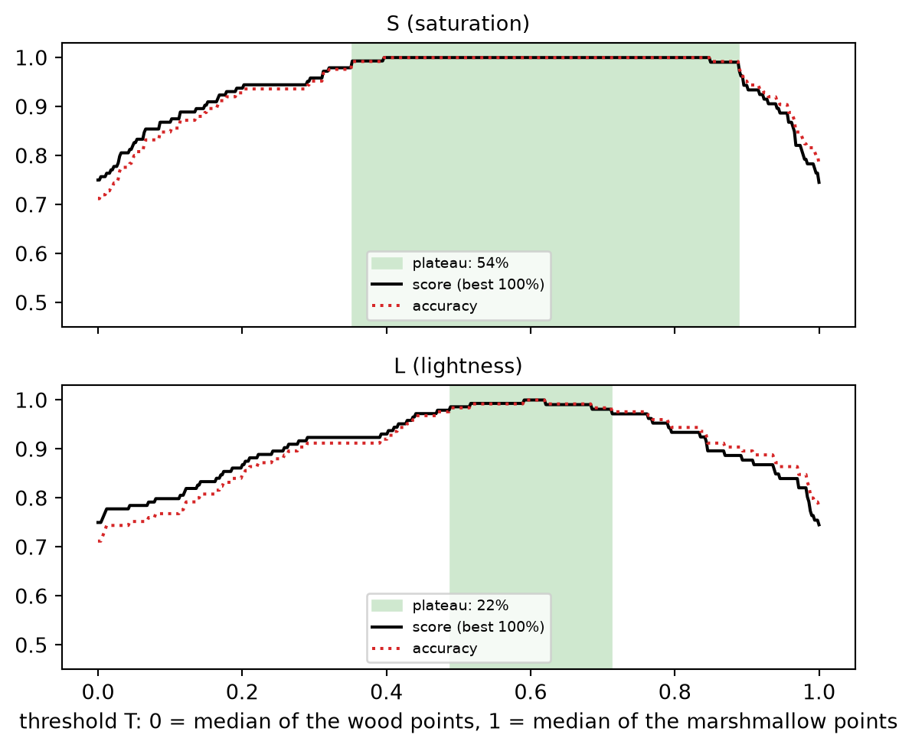
3. All nine, measured
| wood vs marshmallow | R | G | B | H | S | V | L | a | b |
|---|---|---|---|---|---|---|---|---|---|
| score | 95% | 100% | 100% | 84% | 100% | 96% | 100% | 98% | 94% |
| accuracy | 95% | 100% | 100% | 86% | 100% | 96% | 100% | 98% | 94% |
| plateau | 14% | 25% | 53% | 68% | 54% | 13% | 22% | 17% | 8% |
Read the score first: four numbers (G, B, S, L) put every point on the right side. Score and accuracy agree here, because the two groups have a similar number of points. Then the plateau: S and B keep a wide range of good thresholds, L and G a narrow one. L is the number that measures the light itself, and step 2 showed that the light changes across the photo: a narrow plateau on the very quantity that varies is a bad bet. H has a wide plateau of a poor score: a plateau means nothing until the score is good. S it is: as wide as B, and the number that, by construction, depends least on how bright a pixel is.
4. Which pixels are objects?
The idea. A threshold is not a number you type: it is a step that calculates a number from the data, with a rule you can state.
Strategies. Histogram methods, each with its own assumption about the histogram: Otsu, Li, Yen, triangle, minimum, isodata, mean; multi-Otsu for three groups. Choose among them with the points.
How to show it works. The margin each method leaves on the points (next slide); the points inside the objects; the mask on the photo.
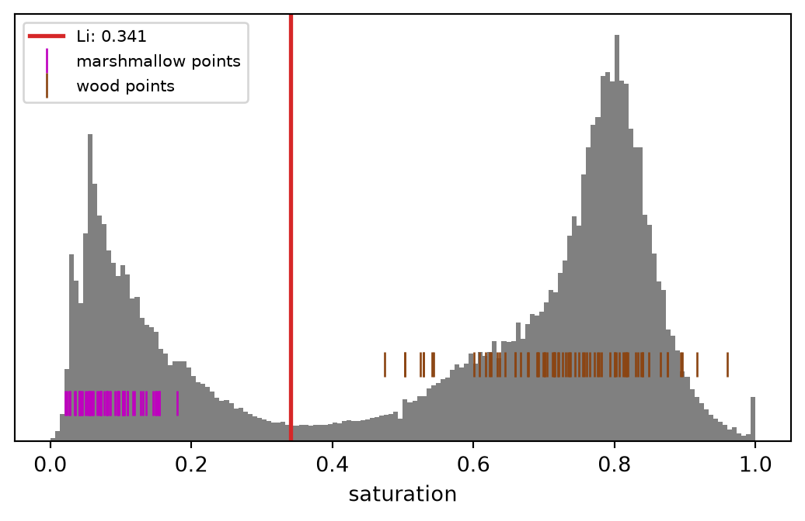
4. Which method? The margin on the points
Every method calculates its own T from the whole image. The points tell us which one is safest: how far is T from each group, measured in that group’s spread?
\[ \text{margin} = \min\left( \frac{|T - \mu_{\text{marsh}}|}{\sigma_{\text{marsh}}}, \; \frac{|T - \mu_{\text{wood}}|}{\sigma_{\text{wood}}} \right) \]
\(\mu\) and \(\sigma\): the mean and the standard deviation of the saturation at the points of each group. The margin is the number of standard deviations of safety on the tighter side; a T outside the two means has no margin at all. The score (week 5) is there too: how many points land on the right side.
| method | threshold T | margin (σ) | score |
|---|---|---|---|
| li | 0.341 | 3.60 | 100% |
| minimum | 0.365 | 3.37 | 100% |
| isodata | 0.443 | 2.65 | 100% |
| otsu | 0.443 | 2.65 | 100% |
| mean | 0.548 | 1.67 | 94% |
| yen | 0.635 | 0.86 | 90% |
| triangle | 0.662 | 0.61 | 88% |
What we did. Li’s method: the widest margin, more than 3.6 standard deviations from both groups. Marshmallows are the pixels with saturation at or below 0.341. Every wood point lies above it, including the 22 on the darker left third of the photo: the uneven light of step 2 does not disturb this decision, so it needs no correction.
4. The mask on the photo
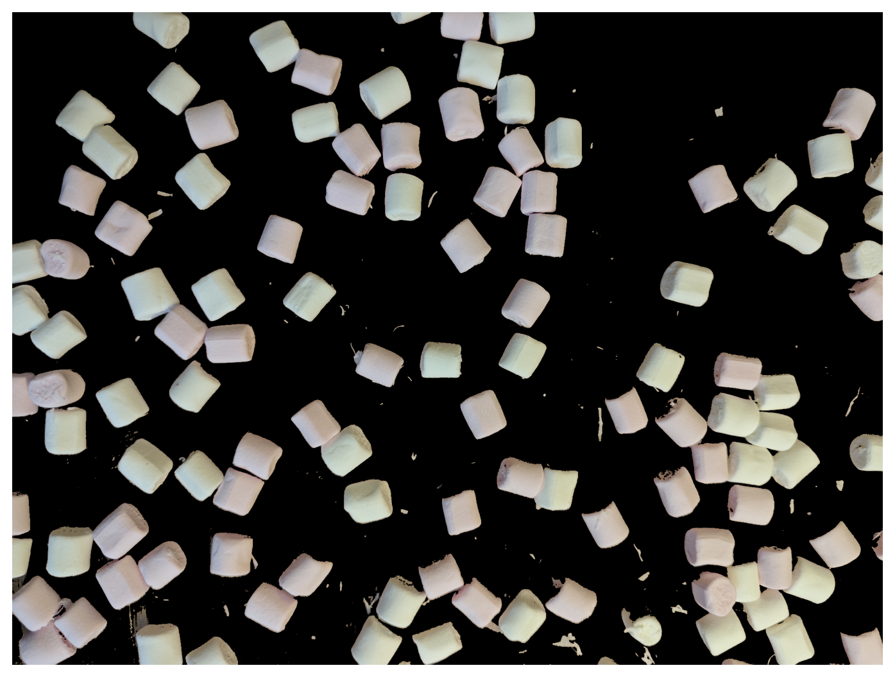
Only the pixels with saturation at or below Li’s threshold are kept; everything else is black. Right where it matters: every marshmallow is in, the wood is out. Wrong in the details: 503 connected pieces for about a hundred marshmallows.
5. Clean the mask: what is wrong
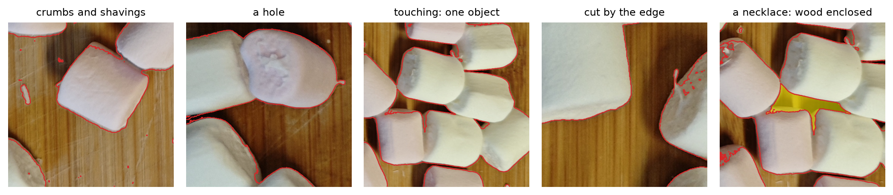
| Defect | Operation (week 6) | Parameter |
|---|---|---|
| holes and dents inside an object | fill holes: every hole, whatever its size | none |
morphology.remove_small_holes: only the holes up to a size |
the largest hole to fill | |
| crumbs, fibres, specks, rough margins | opening: erosion, then dilation | the radius of the footprint |
| narrow gaps and cracks inside an object | closing: dilation, then erosion | the radius of the footprint |
| pieces too small to be an object | remove small objects | the minimum area |
| objects cut by the edge of the photo | segmentation.clear_border (if DEFINE says so) |
none |
| touching objects | not a cleaning job: step 8 |
Fill holes needs no parameter, and that is its risk: touching objects can close a necklace around a piece of background, and fill holes turns it into object. On our photo, one such hole (yellow, right): 9,841 px of wood, when the next largest hole is 862 px. remove_small_holes(mask, max_size=...) would leave it alone, at the price of a parameter to choose.
5. Clean the mask: what we did
The idea. Decide which defect you are removing, then pick the operation; the size of the footprint is a length, measured on the objects. The order is part of the rule.
What we did. Fill holes, then an opening with disk(10) (from the distance transform: the debris is thinner than 21 px, a marshmallow is ~190 px across), then objects of at least 9000 px (a quarter of a marshmallow). 503 pieces → 70 objects.
The evidence. 113 of 113 reference marshmallows are inside the cleaned mask (the others are slivers cut by the edge of the photo); 0 wood points are.
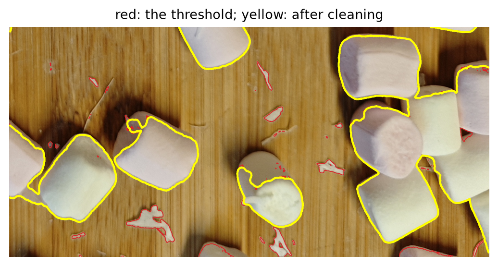
6. Classes inside the foreground
The idea. Once the wood is gone, pink or white is the same problem again, one level down: a threshold inside a mask. Which pixels, among the marshmallow pixels, are pink? The same tools: a representation chosen with points, a threshold calculated from the data, but on a smaller population, with its own best number. One decision after the other: a cascade.
Strategies. A second representation, chosen with the Pink and White points and thresholded inside the mask; or decide per object, from what you measure on it (mean colour, area, shape).
How to show it works. Score and plateau of the points; the margin of the method, inside the mask; each reference point in the right class.
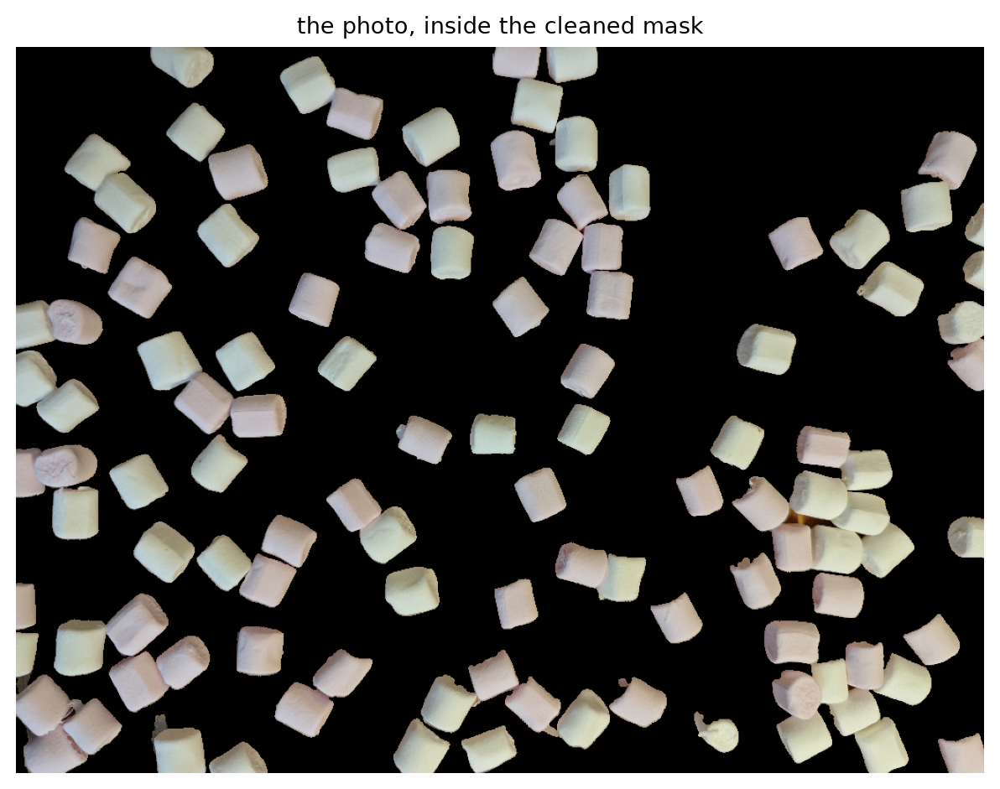
6. Which number, which threshold, inside the mask?
| pink vs white | R | G | B | H | S | V | L | a | b |
|---|---|---|---|---|---|---|---|---|---|
| score | 58% | 90% | 56% | 79% | 73% | 69% | 86% | 100% | 84% |
| plateau | 50% | 5% | 100% | 54% | 16% | 11% | 3% | 61% | 6% |
| method | threshold T | margin (σ) | score |
|---|---|---|---|
| li | -1.16 | 4.15 | 100% |
| minimum | -0.94 | 3.92 | 100% |
| isodata | -0.64 | 3.61 | 100% |
| otsu | -0.64 | 3.61 | 100% |
| mean | -0.03 | 2.98 | 100% |
| triangle | 3.91 | outside | 57% |
| yen | 10.87 | outside | 50% |
The representation. On the 29 Pink and 24 White points, only a (green ↔︎ red) puts every point on the right side, and with a wide plateau. Saturation, the winner for the foreground, is no help here: each question has its own number.
The threshold. Each method run on the a values inside the mask only, scored by its margin on the Pink and White points (left). Li again leaves the widest margin: pink is a above -1.16. On the whole photo, wood included, the same method would land between wood and marshmallows: the threshold depends on the population.
6. Pink and white
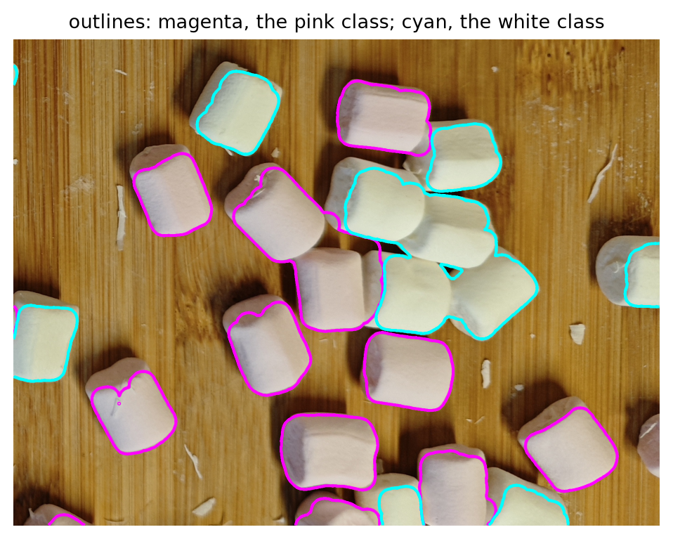
What we did. Lab a above Li’s threshold, inside the mask. Then each class cleaned again, as in step 5 but with a larger disc (disk(30)) and no fill holes (a pink rim closed around a white marshmallow would turn it pink).
The evidence. Pink points: 56 in the pink class, 0 in the white one. White points: 54 in white, 0 in pink. (The few missing are marshmallows cut by the edge, removed by the size filter.)
7. Measure and count: the objects
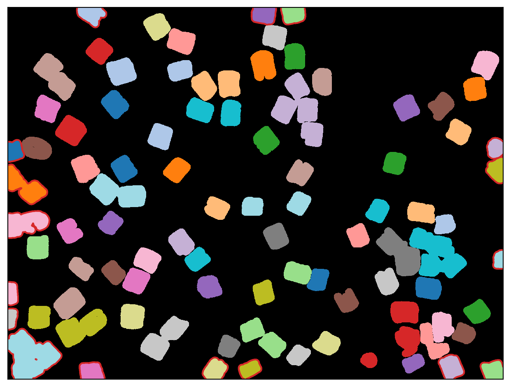
measure.label on each class mask: one colour per object, 45 pink and 48 white. Two things to decide before counting. Objects touching the edge (outlined in red, 17 of them): count them, or drop them with segmentation.clear_border? DEFINE decides; here we keep them (our count by hand includes every marshmallow we can see), in the final project they are dropped. Objects that hold more than one marshmallow: touching marshmallows of the same colour are still one object. How do we count when objects aggregate?
7. Option 1: total area / median area
If most objects are a single marshmallow, the median area is the area of one, and
\[ \text{count} \approx \frac{\text{total area of the class}}{\text{median area of its objects}} \]
Groups, pieces and singles all count through their area. One line of code, nothing to split.
| photo | class | objects | total area / median | by hand |
|---|---|---|---|---|
| built on | pink | 45 | 55.0 | 57 |
| built on | white | 48 | 51.0 | 56 |
| held back | pink | 48 | 53.5 | 55 |
| held back | white | 45 | 48.5 | 52 |
Smart, but not precise: within 10% of the count by hand on both photos, white always low. The area of one marshmallow depends on how it lies (on its side, on its end), white marshmallows lose a rim to the pink class, and a piece cut by the edge counts as a fraction. Good enough if DEFINE asks for “within 10%”; not if it asks for every marshmallow. Option 2: separate them, and count what is left.
7. What else can we measure on an object?
regionprops |
What it measures |
|---|---|
area |
pixels in the object |
eccentricity |
of the ellipse with the same second moments: 0 for a disc, towards 1 for a line |
axis_major_length, axis_minor_length |
the two axes of that ellipse; their ratio says how elongated it is |
solidity |
area / area of the convex hull: 1 for a convex shape, lower for groups and odd shapes |
perimeter |
the length of the outline |
intensity_mean |
the mean of a property (a colour) over the object |
measure.regionprops_table(labels, properties=[...]) gives them all as a table, one row per object.
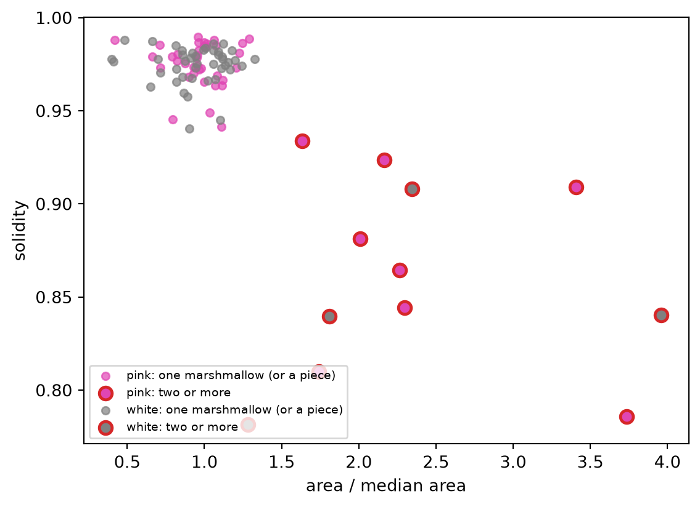
Each object, with the number of reference points it holds. Groups (red rims) are large and less solid: their convex hull has a notch at every waist. Shape descriptors can tell a group from a single object, find the objects that need splitting, or tell one kind of object from another when the colour cannot (a liquorice lace is long and thin: eccentricity close to 1).
8. Option 2: separating touching objects
What is left
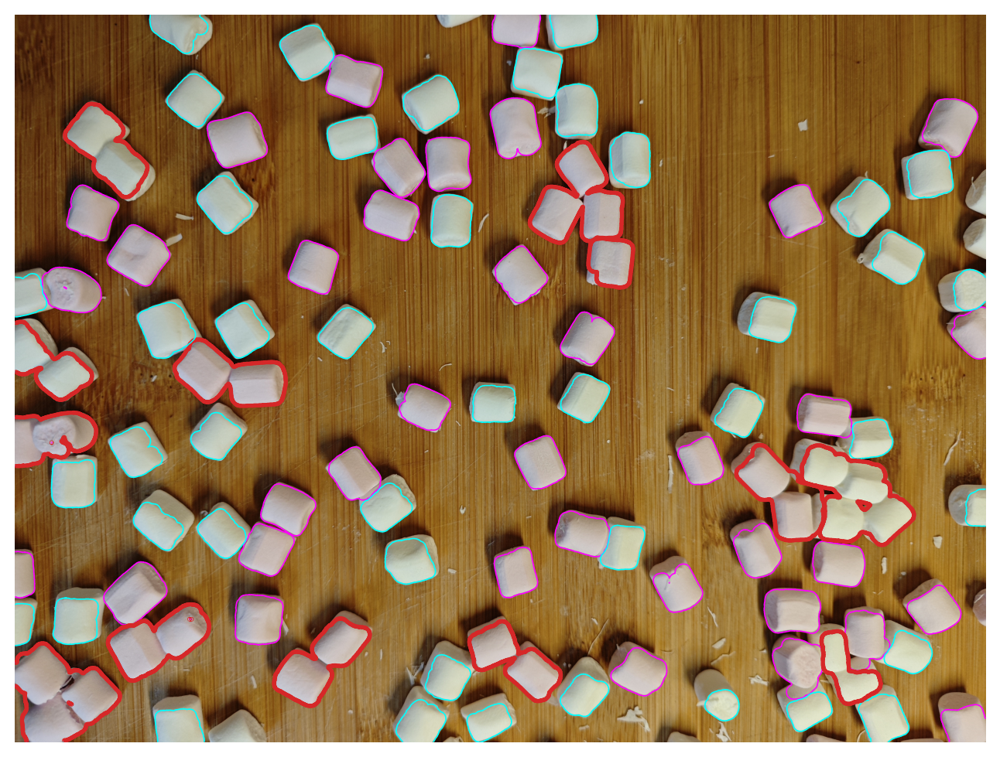
Outlined in red, the objects that hold more than one reference point: 8 pink objects holding 19 marshmallows, 4 white objects holding 10. Where does one marshmallow end and the next begin?
Three ways to answer
A. Use the shape: the watershed
Touching marshmallows make a mask with a waist. Find the centre of each one, then grow each centre outwards until it meets its neighbour.
Applied to every object.
B. Split only what needs splitting
We already know which objects are too big: their area is more than one marshmallow. Apply the watershed only to those, and leave the singles alone (a single can never be cut by mistake).
C. Change the representation, inside the big objects
Where two marshmallows touch there is usually a thin dark line. Inside a big object, look at lightness instead of colour, and threshold again: it is step 6 once more, a threshold inside a mask.
All three are steps with a rule, and all three are checked the same way: object by object, against the points picked by hand.
A. The distance transform, again
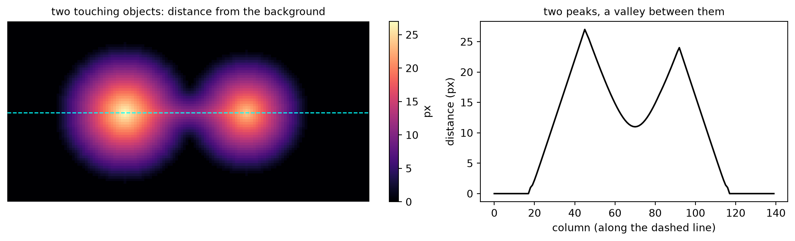
We met the distance transform in week 6, to choose the size of the footprint. Its value at a pixel is the distance to the nearest background pixel. Inside a single round object it has one peak, at the centre; two touching objects give two peaks with a valley where they meet. Finding the peaks is a detection step: one peak, one object.
A. When the shape does not help
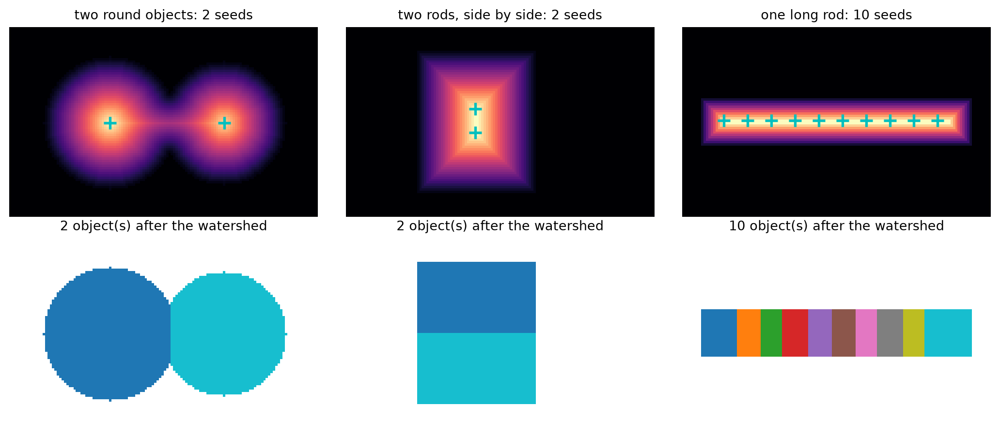
The watershed on the distance transform finds objects by their waist: it works because marshmallows are compact, so two that touch make a narrow neck between two peaks. Two rods lying side by side touch along their whole length: no waist at all, and the watershed still cuts the block, but across the rods (top and bottom halves) instead of between them. A single long rod has a flat ridge with many maxima: it is cut into pieces. For long or flat objects, the shape of the mask is the wrong evidence: look for another number (C) or another property of the objects.
A. Seeds and flooding
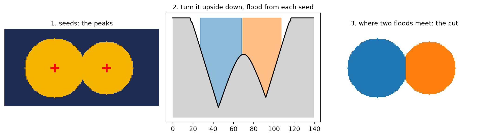
Turn the distance transform upside down: each peak becomes the bottom of a basin. Pour water from each seed; the water rises, and where water from two seeds would meet, a wall is built. The walls are the cuts. In code: feature.peak_local_max(dist, min_distance=...) for the seeds, then segmentation.watershed(-dist, markers, mask=mask). min_distance: two peaks closer than this count as one seed. It is a length, so it comes from the objects: three quarters of the radius of one marshmallow (\(r_1 = \sqrt{A_1/\pi}\), from the median area of step 7).
A. The watershed on the distance transform, on the photo
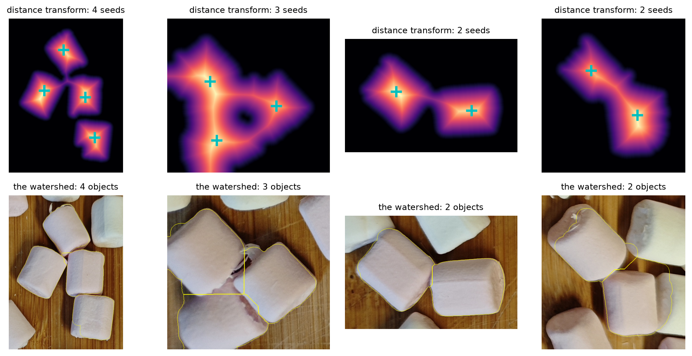
The four largest pink objects. Top: the distance transform of each, with the seeds found on it. Bottom: the photo with the objects the watershed grew from those seeds (each outlined in yellow). The cuts follow the waists between marshmallows.
A. Object by object
| photo | class | objects | matched | merged | extra | missed | by hand | |
|---|---|---|---|---|---|---|---|---|
| built on | pink | before | 45 | 37 | 8 | 0 | 1 | 57 |
| built on | pink | watershed | 56 | 56 | 0 | 0 | 1 | 57 |
| built on | white | before | 48 | 44 | 4 | 0 | 2 | 56 |
| built on | white | watershed | 54 | 54 | 0 | 0 | 2 | 56 |
| held back | pink | before | 48 | 42 | 6 | 0 | 1 | 55 |
| held back | pink | watershed | 54 | 54 | 0 | 0 | 1 | 55 |
| held back | white | before | 45 | 42 | 3 | 0 | 1 | 52 |
| held back | white | watershed | 51 | 51 | 0 | 0 | 1 | 52 |
Each reference point should fall in exactly one object, and each object should hold exactly one point. Matched: one object, one point. Merged: one object, two or more points. Extra: an object with no point (a marshmallow cut in two, or something that is not a marshmallow). Missed: a point that falls in no object; here, marshmallows cut by the edge of the photo, removed on purpose by the size filter. After the watershed: no merged objects, no extra ones, on both photos.
B. Split only what needs splitting
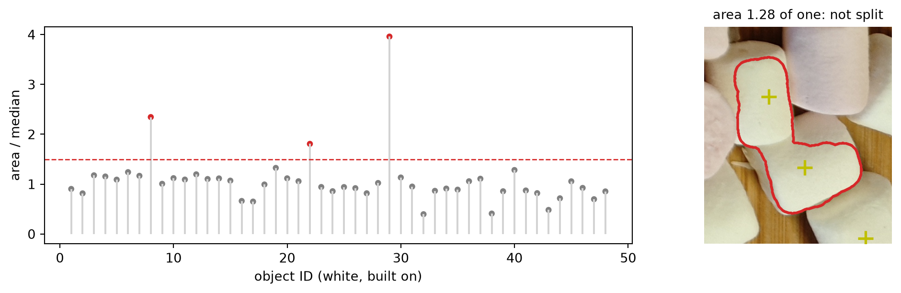
Objects with an area of at least 1.5 marshmallows are split (red: 3 of 48 white objects); the rest are left alone. Simpler, and a single marshmallow can never be cut by mistake. But “too big” is measured by area, and area depends on how a marshmallow lies: two marshmallows, one of them standing on its end, can be smaller than 1.5 of one. That pair (right, the reference points in yellow) is never looked at.
C. Another representation, inside the big objects
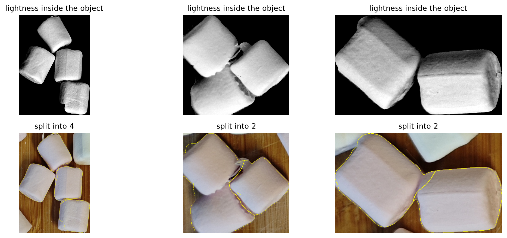
Inside each big object: lightness (Lab L), Otsu’s threshold computed inside that object only, a small opening, then every pixel of the object goes to the nearest bright piece. The dark line where two marshmallows touch becomes the cut. It is the idea of step 6 again: the right number for this question, thresholded inside the mask of the step before. It fails where two marshmallows touch without a shadow between them.
Which one?
| photo | class | by hand | A: watershed, all objects | B: watershed, big objects only | C: lightness, big objects only |
|---|---|---|---|---|---|
| built on | pink | 57 | 56 matched, 0 merged, 0 extra | 56 matched, 0 merged, 0 extra | 52 matched, 2 merged, 0 extra |
| built on | white | 56 | 54 matched, 0 merged, 0 extra | 52 matched, 1 merged, 0 extra | 52 matched, 1 merged, 0 extra |
| held back | pink | 55 | 54 matched, 0 merged, 0 extra | 54 matched, 0 merged, 0 extra | 52 matched, 1 merged, 0 extra |
| held back | white | 52 | 51 matched, 0 merged, 0 extra | 51 matched, 0 merged, 0 extra | 51 matched, 0 merged, 0 extra |
On these photos the watershed on every object wins: the marshmallows are compact blobs, exactly what the distance transform assumes. B and C are more direct, and they are worth knowing: when objects are not compact (long, bent, hollow: the liquorice of the final project), a shape-based split is the wrong tool, while “split only the big ones” and “look again with another number” still work. As always: the strategy follows from what the objects are, and the check (object by object, against the points) decides.
9. From one image to many
From a notebook to a pipeline
The notebook was the place to decide: explore, try, check every step, write down why. Once the decisions are made, it is hard to read and slow to run on a hundred photos.
A pipeline is the same decisions, written once:
- one function per step: the final version, with its rule in the docstring (each one was checked in the notebook)
- the parameters in one place, each with where it came from
- one function,
process(image), that calls the steps one after the other and returns the answer: where each marshmallow is (the count is how many). The only new code is how the steps are connected separateis step 8, option A: the distance transform of a class mask, its peaks as seeds (at least three quarters of the radius of one marshmallow apart), the watershed from those seeds
# lec07_src/marshmallow_pipeline.py (abridged)
PARAMS = {"radius": 10, # px, distance transform
"min_area": 9000, # px, a quarter of one
"class_radius": 30,
"min_distance": 0.75}
def foreground(image): ... # 4: S <= Li
def clean_mask(m, r, area): ... # 5: fill, open, size
def split_classes(image, m): ... # 6: a > Li, inside
def clean_class(m, r, area): ... # 6: open, size
def one_marshmallow(m): ... # 7: median area
def separate(m, one, f): ... # 8: watershed on the
# distance transform
def process(image, p=PARAMS):
raw, t_sat = foreground(image)
mask = clean_mask(raw, p["radius"], p["min_area"])
pink, white, t_a = split_classes(image, mask)
found = {}
for name, m in (("pink", pink), ("white", white)):
m = clean_class(m, p["class_radius"], p["min_area"])
one, total = one_marshmallow(m)
labels = separate(m, one, p["min_distance"])
found[name] = centroids(labels)
return found # one (row, col) per marshmallowRunning on four photos
# lec07_src/check_marshmallows.py (abridged)
# the same script as check_pipeline.py in your final project
PHOTOS = ["gen1.jpg", "gen2.jpg", "gen3.jpg", "gen4.jpg"]
import marshmallow_pipeline
importlib.reload(marshmallow_pipeline)
fig, axes = plt.subplots(2, 2, figsize=(12, 9))
for i, (name, ax) in enumerate(zip(PHOTOS, axes.ravel()), 1):
image = io.imread(data / name)
result = marshmallow_pipeline.process(image)
progress(i, len(PHOTOS), f"{name}: ...")
ax.imshow(image[::4, ::4])
for k, colour in CLASSES.items(): # a dot per object
...
plt.show()data/ holds the photo we built on and four more of the same board, taken from other heights: gen1.jpg to gen4.jpg. In the notebook, %run check_marshmallows.py, with no arguments: it reloads the pipeline file, runs process on each photo, prints how far it has got, and draws the four photos with a dot on every marshmallow counted. About 25 s per full-size photo.
[--------------------] 0% starting
[#####---------------] 25% gen1.jpg: pink 79, white 77 (25 s)
[##########----------] 50% gen2.jpg: pink 55, white 51 (25 s)
[###############-----] 75% gen3.jpg: pink 42, white 52 (26 s)
[####################] 100% gen4.jpg: pink 28, white 27 (24 s)Four photos we did not build on
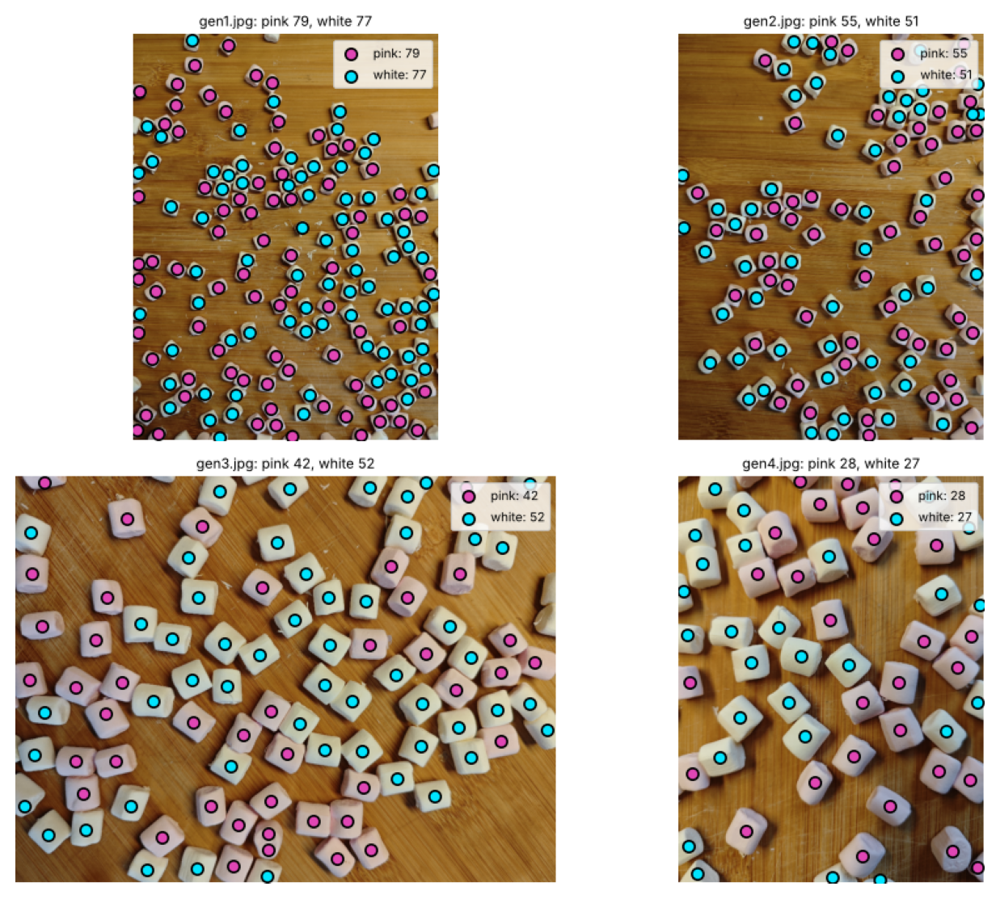
The same pipeline, unchanged, from a photo taken much farther away (gen1) to one much closer (gen4). The thresholds travel: they are calculated on each photo. The sizes are in pixels, chosen where one marshmallow is about 32k px. Look together: a marshmallow missed? Two dots on one? A dot on a piece at the edge? Which step would you look at first: change it, or accept it?
Tutorial
The final project starts today. We present the challenge, the rules, and how your pipeline will be tested; then you start: open the photos, write DEFINE, pick your first points.
If the lecture runs long, we finish “From one image to many” at the start of the tutorial.
Final project
Sweets on patterned paper: green and orange round sweets, red liquorice.
- how many green sweets, orange sweets and pieces of liquorice? Objects touching the edge of the photo are not counted
- build in your notebook on the first photo, every step with its evidence, as all term
- move the final pipeline into
sweets_pipeline.py: your functions, the parameters in one place,process(image) - run it on the other four photos with the helper we give you (a dot on every object it counted) and comment on what you see: no need to go back and fix it
- 5 more photos are kept back: after the deadline we run your
processon them. It is a stress test: magic numbers tuned on one photo will show there
Instructions, data and deadline on Moodle.
Take-home message
- A pipeline is a chain of steps; for each one: an idea, a choice among strategies, a check you can show
- Separating classes and separating objects are the same move as finding the foreground: choose the right number, threshold it inside the mask you already have
- Touching objects: the watershed works when objects are compact; splitting only the big ones, or looking with another number, is often more direct
- A notebook is where you decide; a pipeline is where the decisions live: one function per step, the parameters in one place, one function that calls them in order
- On a new image, look at what the pipeline counted: find which step failed, then change the strategy, or accept the failure and say so
Seven weeks in seven lines
- DEFINE, DECOMPOSE, SPECIFY ⇄ DIAGNOSE, VALIDATE: the definition of correctness is yours, whoever writes the code
- numpy, matplotlib, scipy: read the code, know what each call does to your numbers
- a decision is a threshold with a rule; choose it on some data, report it on other data
- images are tables of numbers; correct the artefacts you can show, and check that you did
- choose the number each pixel carries, then calculate the threshold; stable is not correct
- mask engineering: one operation per defect, sizes measured on the objects; one class at a time
- a pipeline with a check after every step, run on many images; the failures tell you where to look next

ENG3090 Biomedical Engineering Skills 3